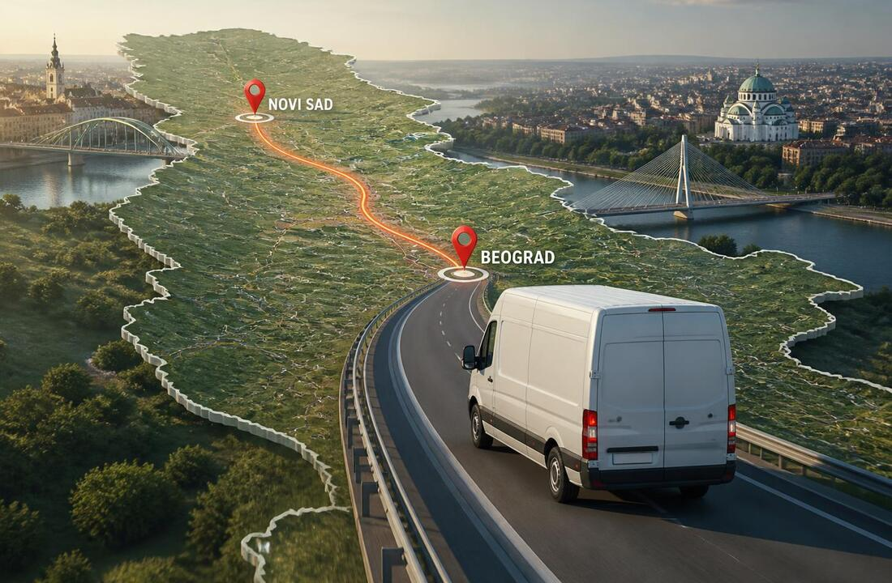

KOLIKO KOŠTA MEĐUGRADSKA SELIDBA?
SVE ŠTO TREBA DA ZNATE O CENAMA MEĐUGRADSKIH SELIDBI
Kada se planira preseljenje iz jednog grada u drugi, jedno od prvih pitanja koje se postavlja jeste koliko košta međugradska selidba. Za razliku od preseljenja unutar istog grada, kod međugradske selidbe u cenu ulaze udaljenost između dve adrese, količina stvari, vrsta vozila, broj radnika i vreme potrebno za utovar, transport i istovar. Zbog toga ne postoji jedna univerzalna tarifa koja važi za sve.
Konačan iznos najbolje je odrediti na osnovu konkretne relacije i količine stvari koje se prevoze. Atlas selidbe Beograd mogu organizovati kompletan proces – od iznošenja i zaštite stvari, preko transporta do drugog grada, pa sve do unosa i raspoređivanja stvari na novoj adresi. U nastavku možete videti šta najviše utiče na cenu i kakvi mogu biti okvirni troškovi.
Od čega zavisi cena međugradske selidbe?
Cena međugradske selidbe formira se na osnovu nekoliko elemenata. Najvažnija je svakako udaljenost između polazne i odredišne adrese, ali kilometraža nije jedini faktor. Količina i vrsta stvari određuju koje vozilo je potrebno, koliko radnika treba angažovati i koliko će trajati utovar i istovar.
Na cenu mogu uticati i:
- količina i težina stvari koje se prevoze;
- udaljenost između dve adrese;
- tip i veličina vozila;
- broj radnika potrebnih za preseljenje;
- spratnost i postojanje lifta;
- pristup vozilu objektu i mogućnost parkiranja;
- demontaža i montaža nameštaja;
- pakovanje i zaštita stvari;
- transport posebno teških ili gabaritnih predmeta.
Kada su u pitanju međugradska preseljenja posebno je važno unapred sagledati kompletan obim posla, jer dve selidbe na istoj relaciji mogu imati potpuno različitu cenu.
Koliko košta preseljenje iz jednog grada u drugi?
Kao orijentaciju možemo uzeti nekoliko čestih relacija iz Beograda. Iznosi u tabeli predstavljaju okvirne primere, a ne fiksni cenovnik, jer konačna cena zavisi od količine stvari, vozila, radnika i dodatnih usluga.
| Relacija | Okvirna udaljenost | Okvirna cena* |
|---|---|---|
| Beograd – Novi Sad | oko 95 km | 15.000–30.000 RSD |
| Beograd – Kragujevac | oko 120 km | 18.000–35.000 RSD |
| Beograd – Šabac | oko 85 km | 15.000–28.000 RSD |
| Beograd – Subotica | oko 200 km | 25.000–45.000 RSD |
| Beograd – Čačak | oko 145 km | 20.000–38.000 RSD |
| Beograd – Niš | oko 240 km | 30.000–55.000 RSD |
| Beograd – Novi Pazar | oko 280 km | 30.000–60.000 RSD |
| Beograd – Zlatibor | oko 220 km | 25.000–55.000 RSD |
| Beograd – Kopaonik | oko 275 km | 30.000–60.000 RSD |
*Orijentacioni primeri za standardno preseljenje i ne predstavljaju konačnu ponudu.
Na tržištu se međugradski prevoz nameštaja često obračunava i prema ukupnoj kilometraži, pri čemu se objavljeni cenovnici različitih prevoznika razlikuju prema tipu vozila i načinu obračuna. Zato je za realnu procenu važnije poslati podatke o samoj selidbi nego računati cenu samo na osnovu kilometara.
Koliko utiče količina stvari na cenu selidbe?
Garsonjera sa nekoliko komada nameštaja i kompletna kuća ne zahtevaju isti broj radnika niti isto vozilo. Kod manje količine stvari može biti dovoljan kombi za selidbe, dok se za veća preseljenja koristi veće vozilo sa većim kapacitetom. Veća količina stvari takođe znači duži utovar, više prostora za zaštitu i više vremena za istovar na odredištu.
Pozovite Atlas selidbe
Posebnu pažnju zahtevaju kabasti i teški predmeti kao što su veliki plakari, ugaone garniture, bračni kreveti, masivni stolovi, sefovi, klaviri i pojedini kućni aparati. Njihov transport može zahtevati dodatne radnike, specijalnu zaštitu ili pažljivije planiranje unosa i iznosa.
Zbog toga je korisno da klijenti pre procene naprave spisak većih komada nameštaja i, po mogućnosti, pošalju fotografije kako bi se lakše odredilo koliko će koštati međugradska selidba. Na osnovu tih informacija mnogo je lakše proceniti potrebno vozilo, broj radnika i vreme trajanja preseljenja.
Da li demontaža, montaža i pakovanje povećavaju cenu?
Da. Ako je za transport potrebno rastaviti ormare, krevete, stolove ili druge velike komade, demontaža i montaža nameštaja predstavljaju dodatni posao. Isto važi za pakovanje stvari, zaštitu nameštaja, staklenih površina i drugih osetljivih predmeta.
Međutim, angažovanje Atlas profesionalne agencije za selidbe za ove poslove može biti praktičnije od samostalnog rastavljanja i pakovanja. Naši iskusni radnici mogu pripremiti stvari za prevoz, pravilno ih zaštititi i organizovati utovar tako da se raspoloživi prostor u vozilu iskoristi što bolje.
Kod međugradske selidbe kvalitetna zaštita je naročito važna jer stvari tokom dužeg transporta provode više vremena u vozilu. Zato se tarifa ne bi trebalo da posmatra samo kroz najnižu početnu ponudu, već i kroz ono što je tom ponudom zaista obuhvaćeno. Dodatne usluge poput pakovanja, demontaže, montaže i skladištenja uobičajeno utiču na konačnu cenu selidbe.
Koliko košta prevoz pojedinačnih komada nameštaja?
Nije neophodno da vršite kompletno preseljenje stana ako vam je potreban samo transport nekoliko komada. Na primer, neko može kupiti polovnu ugaonu garnituru u drugom gradu, preseliti samo nekoliko komada nameštaja ili prevesti određeni kućni aparat.
Cena takvog transporta zavisi od dimenzija i težine predmeta, načina utovara, udaljenosti i potrebe za dodatnim radnicima. Kao primer, manji komadi poput komode ili stola obično zahtevaju manje vremena za manipulaciju od velikog plakara ili ugaone garniture.

Klavir i pianino predstavljaju posebnu kategoriju. Zbog težine, dimenzija i osetljivosti mehanizma ne bi trebalo njihovu cenu porediti sa običnim komadom nameštaja. Za selidbe klavira mogu biti potrebni dodatni radnici, posebna zaštita i pažljivo planiranje prolaza, stepenica i lifta. Upravo zbog toga se ovakvi predmeti procenjuju pojedinačno.
Kako da smanjite cenu međugradske selidbe?
Postoji nekoliko načina da se troškovi drže pod kontrolom, bez ugrožavanja bezbednosti stvari. Najvažnije je da se preseljenje dobro pripremi i da agencija unapred dobije što više informacija.
Pre zakazivanja međugradske selidbe možete:
- Razvrstati stvari i izbaciti ono što više ne koristite.
- Napraviti spisak većih komada nameštaja.
- Unapred dogovoriti koje stvari sami pakujete.
- Proveriti da li vozilo može nesmetano da priđe objektu.
- Informisati agenciju o spratu i postojanju lifta.
- Poslati fotografije većih i specifičnih predmeta.
- Zatražiti jasnu ponudu koja navodi šta je uključeno u cenu.
Dobro pripremljena selidba može biti brža i jednostavnija, a samim tim se izbegavaju nepotrebna čekanja i dodatni troškovi. Posebno je važno unapred prijaviti otežavajuće okolnosti, kao što su usko stepenište, nedostatak lifta, velika udaljenost između ulaza i mesta za parkiranje ili potreba za demontažom nameštaja.
Kako dobiti tačnu cenu međugradske selidbe?
Ako želite da znate koliko košta međugradska selidba baš u vašem slučaju, najpouzdanije je da pošaljete podatke o polaznoj i odredišnoj adresi, približnoj količini stvari i većim komadima nameštaja. Fotografije mogu dodatno pomoći da se proceni obim posla bez nepotrebnog nagađanja.
Pozovite Atlas selidbe
Atlas selidbe na osnovu tih informacija može da sagleda kompletnu organizaciju preseljenja i predloži odgovarajuće vozilo i broj radnika. Na taj način unapred znate šta je obuhvaćeno uslugom i lakše možete da planirate budžet.
Cena međugradske selidbe ne zavisi samo od broja kilometara. Na konačan iznos utiču količina stvari, vrsta i veličina nameštaja, potrebno vozilo, broj radnika, spratnost, lift, pristup objektima, kao i dodatne usluge poput pakovanja, demontaže i montaže.
Zato je najbolji način da dobijete realnu cenu da agenciji pružite što više informacija o samoj selidbi. Ako planirate preseljenje iz Beograda u drugi grad ili transport stvari između gradova u Srbiji, mi možemo organizovati kompletan proces i prilagoditi uslugu vašim potrebama. Kontaktirajte Atlas selidbe i zatražite besplatnu procenu kako biste na vreme saznali koliko bi vaša međugradska selidba koštala.
POVEZANI ČLANCI

Transport nameštaja
Brinete kako da organizujete transport nameštaja bez rizika od oštećenja ili niste sigurni kome da poverite prevoz? Nema razloga za brigu – Atlas selidbe Beograd su tu da vam olakšaju ceo proces.
Na šta obratiti pažnju tokom transporta nameštaja
Na prvi pogled, transport nameštaja može izgledati jednostavno – spakovati stvari, prevesti ih i raspakovati. Ipak, u stvarnosti je to proces koji zahteva planiranje, iskustvo i pažnju.

Kako bezbedno transportovati nameštaj
Transport nameštaja je često jedan od najkomplikovanijih delova svake selidbe. Nepažljivo rukovanje može izazvati ogrebotine, pucanja i druga oštećenja koja mogu dovesti do dodatnih troškova.